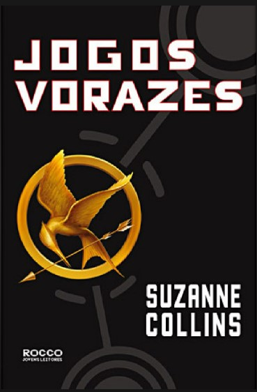
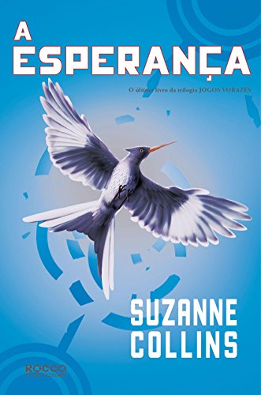
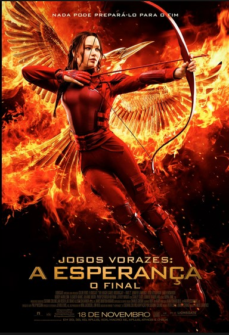

Livros
Jogos Vorazes

Número de páginas: 400 páginas
Editora: Rocco Jovens Leitores
Data da primeira publicação: 14 de setembro de 2008
Adaptação: Jogos Vorazes
Na abertura dos Jogos Vorazes, a organização não recolhe os corpos dos combatentes caídos e dá tiros de canhão até o final. Cada tiro, um morto. Onze tiros no primeiro dia. Treze jovens restaram, entre eles, Katniss. Para quem os tiros de canhão serão no dia seguinte?...
Após o fim da América do Norte, uma nova nação chamada Panem surge. Formada por doze distritos, é comandada com mão de ferro pela Capital. Uma das formas com que demonstra seu poder sobre o resto do carente país é com Jogos Vorazes, uma competição anual transmitida ao vivo pela televisão, em que um garoto e uma garota de doze a dezoito anos de cada distrito são selecionados e obrigados a lutar até a morte!
Para evitar que sua irmã seja a mais nova vítima do programa, Katniss se oferece para participar em seu lugar. Vinda do empobrecido Distrito 12, ela sabe como sobreviver em um ambiente hostil. Peeta, um garoto que ajudou sua família no passado, também foi selecionado. Caso vença, terá fama e fortuna. Se perder, morre. Mas para ganhar a competição, será preciso muito mais do que habilidade. Até onde Katniss estará disposta a ir para ser vitoriosa nos Jogos Vorazes?
Leia o livro aqui!
Em chamas

Número de páginas: 416 páginas
Editora: Rocco Jovens Leitores
Data da primeira publicação: 15 de novembro de 2013
Adaptação: Jogos Vorazes: Em chamas
Depois da improvável e inusitada vitória de Katniss Everdeen e Peeta Mellark nos últimos Jogos Vorazes, algo parece ter mudado para sempre em Panem. Aqui e ali, distúrbios e agitações nos distritos dão sinais de que uma revolta é iminente. Katniss e Peeta, representantes do paupérrimo Distrito 12, não apenas venceram os Jogos, mas ridicularizaram o governo e conseguiram fazer todos – incluindo o próprio Peeta – acreditarem que são um casal apaixonado. A confusão na cabeça de Katniss não é menor do que a das ruas. Em meio ao turbilhão, ela pensa cada vez mais em seu melhor amigo, o jovem caçador Gale, mas é obrigada a fingir que o romance com Peeta é real. Já o governo parece especialmente preocupado com a influência que os dois adolescente vitoriosos – transformados em verdadeiros ídolos nacionais – podem ter na população. Por isso, existem planos especiais para mantê-los sob controle, mesmo que isso signifique forçá-los a lutar novamente. Apenas um sobrevive.
Leia o livro aqui!
A Esperança

Número de páginas: 424 páginas
Editora: Rocco Jovens Leitores
Data da primeira publicação: 24 de agosto de 2010
Adaptações:
Jogos Vorazes: A esperança-Parte 1
Jogos Vorazes: A esperança-Parte 2
Depois de sobreviver duas vezes à crueldade de uma arena projetada para destruí-la, Katniss acreditava que não precisaria mais lutar. Mas as regras do jogo mudaram: com a chegada dos rebeldes do lendário Distrito 13, enfim é possível organizar uma resistência. Começou a revolução. A coragem de Katniss nos jogos fez nascer a esperança em um país disposto a fazer de tudo para se livrar da opressão. E agora, contra a própria vontade, ela precisa assumir seu lugar como símbolo da causa rebelde. Ela precisa virar o Tordo. O sucesso da revolução dependerá de Katniss aceitar ou não essa responsabilidade. Será que vale a pena colocar sua família em risco novamente? Será que as vidas de Peeta e Gale serão os tributos exigidos nessa nova guerra? Acompanhe Katniss até o fim deste thriller, numa jornada ao lado mais obscuro da alma humana, em uma luta contra a opressão e a favor da esperança. Apenas um sobrevive.
Leia o livro aqui!
Informações adicionais
Título original: The Hunger Games
Autora: Suzanne Collins
Direção: Gary Ross
Produção:
Nina Jacobson
Jon Kilik
Roteiro:
Gary Ross
Suzanne Collins
Billy Ray
Filmes
Jogos Vorazes
Data de lançamento: 23 de março de 2012 (Brasil)
Bilheteria: 694,4 milhões USD
Classificação etária: 14
Duração: 2h 22min
Veja o trailer...
Assista o filme aqui!
Jogos Vorazes: Em chamas
Data de lançamento: 15 de novembro de 2013 (Brasil)
Bilheteria: 865 milhões USD
Classificação etária: 14
Duração: 2h 26m
Veja o trailer...
Assista o filme aqui!
Jogos Vorazes: A esperança-Parte 1
Data de lançamento: 19 de novembro de 2014 (Brasil)
Bilheteria: 755,4 milhões USD
Classificação etária: 14
Duração: 2h 3m
Veja o trailer...
Assista o filme aqui!
Jogos Vorazes: A esperança-Parte 2

Data de lançamento: 18 de novembro de 2015 (Brasil)
Bilheteria: 653,4 milhões USD
Classificação etária: 14
Duração: 2h 17m
Veja o trailer...
Assista o filme aqui!